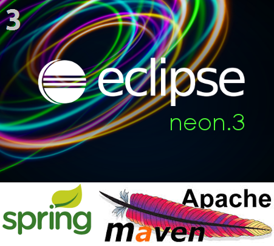
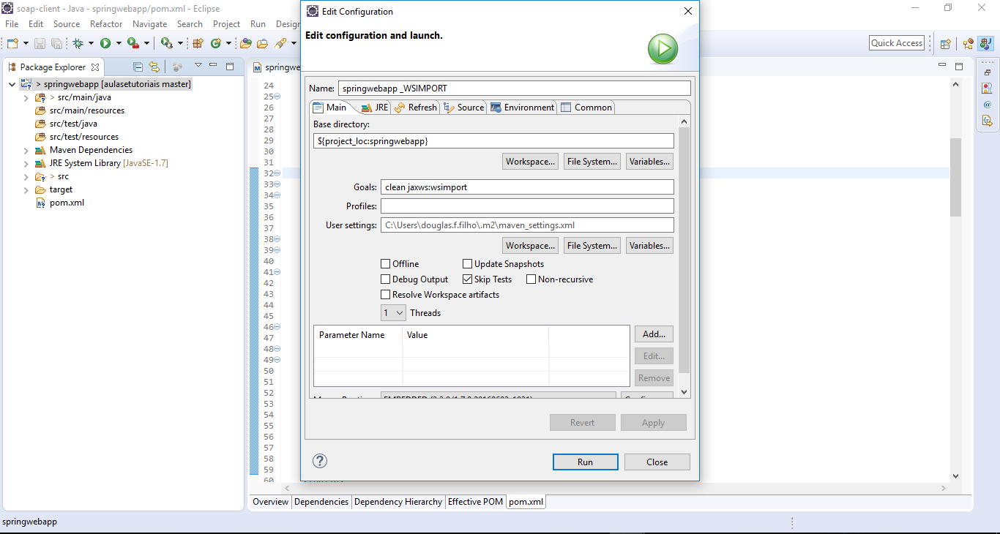
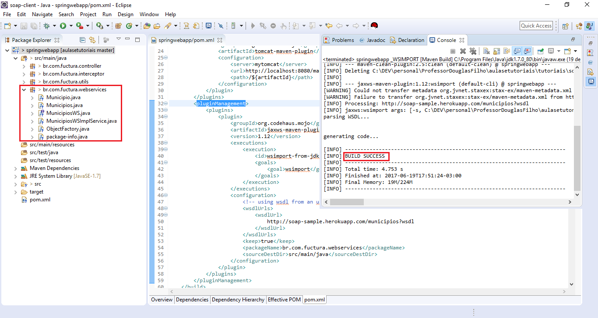
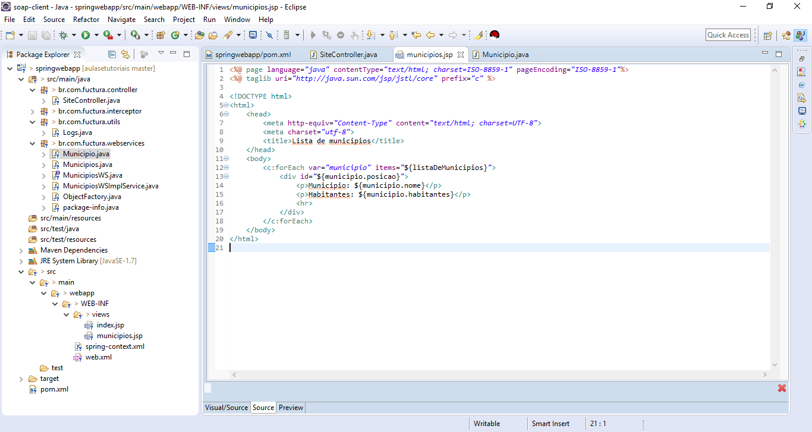
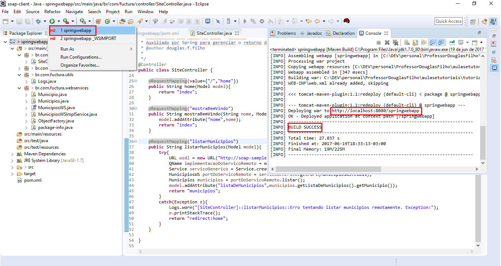

Consumindo WebService SOAP com JAX-WS
Para prosseguir com este tutorial é necessário que já tenha executado com êxito o Tutorial 3 - SpringMVC
Supondo que já realizou os passos do tutorial 3 e está com sua aplicação rodando no Tomcat
Adicione as dependencias do JAX-WS em seu pom.xml
<dependency>
<groupId>javax.xml.ws</groupId>
<artifactId>jaxws-api</artifactId>
<version>2.2.11</version>
</dependency>
<dependency>
<groupId>com.sun.xml.ws</groupId>
<artifactId>jaxws-rt</artifactId>
<version>2.2.10</version>
</dependency>
<dependency>
<groupId>org.glassfish.ha</groupId>
<artifactId>ha-api</artifactId>
<version>3.1.9</version>
</dependency>
Ainda no pom.xml, adicione o seguinte plugin (sob o escopo de pluginManagement):
<pluginManagement>
<plugins>
<plugin>
<groupId>org.codehaus.mojo</groupId>
<artifactId>jaxws-maven-plugin</artifactId>
<version>1.12</version>
<executions>
<execution>
<id>wsimport-from-jdk</id>
<goals>
<goal>wsimport</goal>
</goals>
</execution>
</executions>
<configuration>
<!-- using wsdl from an url -->
<wsdlUrls>
<wsdlUrl>
http://soap-sample.herokuapp.com/municipios?wsdl
</wsdlUrl>
</wsdlUrls>
<keep>true</keep>
<packageName>br.com.fuctura.webservices</packageName>
<sourceDestDir>src/main/java</sourceDestDir>
</configuration>
</plugin>
</plugins>
</pluginManagement>
Feito isso, execute a importação das classes Stub através do plugin wsimport que acabamos de configurar no pom.xml
Para isso, adicione um novo comando "Maven build..." com o goals "clean jaxws:wsimport" de forma que fica igual à imagem seguinte:
Clique em "RUN" e aguarde o processo apresentar a mensagem de sucesso "BUILD SUCESS"
Pressione F5 para atualizar o projeto (ou clique com o botão direito do mouse sobre o nome do projeto e clique em refresh)
Se tudo ocorrer bem, as classes Stubs serão importadas num pacote novo dentro da aplicação
Na classe SiteController, crie um novo mapeamento para listar e exibir o conteudo listado remotamente em uma página jsp
O novo mapeamento ficará da seguinte forma:
@RequestMapping("listarMunicipios")
public String listarMunicipios(Model model){
try{
URL wsdl = new URL("http://soap-sample.herokuapp.com/municipios?wsdl");
QName implementacaoDoServicoRemoto = new QName("http://impl.webservices.fuctura.com.br/", "MunicipiosWSImplService");
Service servicoGenerico = Service.create(wsdl, implementacaoDoServicoRemoto);
MunicipiosWS portDoServicoRemoto = servicoGenerico.getPort(MunicipiosWS.class);
Municipios municipios = portDoServicoRemoto.listar();
model.addAttribute("listaDeMunicipios",municipios.getListaDeMunicipios().getMunicipio());
return "municipios";
}
catch(Exception e){
Logs.warn("[SiteController]::listarMunicipios::Erro tentando listar municipios remotamente. Exception:");
e.printStackTrace();
return "redirect:home";
}
}
Crie a página "municipios.jsp" dentro da pasta views conforme a imagem a seguir:
Execute o redeploy da aplicação, aguarde a mensagem de "BUILD_SUCESS" e teste no navegar usando sua URL (normalmente é http://localhost:8080/springwebapp/listarMunicipios)
Acesse o codigo deste tutorial neste link.
Continue nos acompanhando, acesse nossa home e veja o quanto pode aprender com Java.
Até mais!